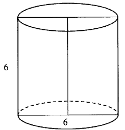

Matura 2011 sierpień
Rozwiązaniem równania \(3(2-3x)=x-4\) jest
A.\( x=1 \)
B.\( x=2 \)
C.\( x=3 \)
D.\( x=4 \)
A
Suma liczby \(x\) i \(15\%\) tej liczby jest równa \(230\). Równaniem opisującym tą
zależność jest
A.\( 0{,}15\cdot x=230 \)
B.\( 0{,}85\cdot x=230 \)
C.\( x+0{,}15\cdot x=230 \)
D.\( x-0{,}15\cdot x=230 \)
C
Rozwiązaniem układu równań \(\begin{cases} x+3y=5\\ 2x-y=3 \end{cases} \) jest
A.\( \begin{cases}x=2\\y=1 \end{cases} \)
B.\( \begin{cases}x=2\\y=-1 \end{cases} \)
C.\( \begin{cases}x=1\\y=2 \end{cases} \)
D.\( \begin{cases}x=1\\y=-2 \end{cases} \)
A
Funkcja liniowa \(f(x)=(m-2)x-11\) jest rosnąca dla
A.\( m>2 \)
B.\( m>0 \)
C.\( m\lt 13 \)
D.\( m\lt 11 \)
A
Do wykresu funkcji liniowej należą punkty \(A=(1,2)\) i \(B=(-2,5)\). Funkcja \(f\)
ma wzór
A.\( f(x)=x+3 \)
B.\( f(x)=x-3 \)
C.\( f(x)=-x-3 \)
D.\( f(x)=-x+3 \)
D
Punkt \(A=(0,5)\) leży na prostej \(k\) prostopadłej do prostej o równaniu \(y = x
+ 1\). Prosta \(k\) ma równanie
A.\( y=x+5 \)
B.\( y=-x+5 \)
C.\( y=x-5 \)
D.\( y=-x-5 \)
B
Dla pewnych \(a\) i \(b\) zachodzą równości \(a^2 - b^2 = 200\) i \(a + b = 8\). Dla tych \(a\) i \(b\) wartość wyrażenia \(a - b\) jest równa
A.\( 25 \)
B.\( 16 \)
C.\( 10 \)
D.\( 2 \)
A
Liczba \(|5 − 2| + |1 − 6|\) jest równa
A.\( 8 \)
B.\( 2 \)
C.\( 3 \)
D.\( -2 \)
A
Liczba \(\log_2 4 + 2\log_3 1\) jest równa
A.\( 0 \)
B.\( 1 \)
C.\( 2 \)
D.\( 4 \)
C
Zbiorem wartości funkcji kwadratowej \(f(x) = x^2 - 4\)
jest
A.\( \langle -4,+\infty ) \)
B.\( \langle -2,+\infty ) \)
C.\( \langle 2,+\infty ) \)
D.\( \langle 4,+\infty ) \)
A
Dane są wielomiany \(W(x) = x^3 + 3x^2 + x - 11\) i
\(V(x) = x^3 + 3x^2 + 1\). Stopień wielomianu \(W(x) - V(x)\) jest równy
A.\( 0 \)
B.\( 1 \)
C.\( 2 \)
D.\( 3 \)
B
W ciągu geometrycznym \((a_n)\) mamy \(a_3 = 5\) i \(a_4
= 15\). Wtedy wyraz \(a_5\) jest równy.
A.\( 10 \)
B.\( 20 \)
C.\( 75 \)
D.\( 45 \)
D
Ile jest liczb naturalnych czterocyfrowych o sumie cyfr równej \(2\) ?
A.\( 1 \)
B.\( 2 \)
C.\( 3 \)
D.\( 4 \)
D
Dane są punkty \(A=(1,-4)\) i \(B=(2,3)\). Odcinek \(AB\) ma długość
A.\( 1 \)
B.\( 4\sqrt{3} \)
C.\( 5\sqrt{2} \)
D.\( 7 \)
C
Kąt \(\alpha \) jest ostry oraz \(\sin \alpha =\cos 47^\circ \). Wtedy miara kąta
\(\alpha \) jest równa.
A.\( 6^\circ \)
B.\( 33^\circ \)
C.\( 47^\circ \)
D.\( 43^\circ \)
D
Ile wyrazów ujemnych ma ciąg \((a_n)\) określony wzorem \(a_n =
2n^2 - 9\) dla \(n \ge 1\)?
A.\( 0 \)
B.\( 1 \)
C.\( 2 \)
D.\( 3 \)
C
Krawędź sześcianu ma długość \(9\). Długość przekątnej tego sześcianu jest równa
A.\( \sqrt[3]{9} \)
B.\( 9\sqrt{2} \)
C.\( 9\sqrt{3} \)
D.\( 9+9\sqrt{2} \)
C
Średnia arytmetyczna sześciu liczb: \(3, 1, 1, 0, x, 2\)
jest równa \(2\). Wtedy liczba \(x\) jest równa
A.\( 3 \)
B.\( 4 \)
C.\( 5 \)
D.\( 6 \)
C
Ze zbioru dwucyfrowych liczb naturalnych wybieramy losowo jedną liczbę.
Prawdopodobieństwo otrzymania liczby podzielnej przez \(30\) jest równe
A.\( \frac{1}{90} \)
B.\( \frac{2}{90} \)
C.\( \frac{3}{90} \)
D.\( \frac{10}{90} \)
C
Przekrój osiowy walca jest kwadratem o boku długości \(6\). Objętość tego walca
jest równa 
A.\( 108\pi \)
B.\( 54\pi \)
C.\( 36\pi \)
D.\( 27\pi \)
B
Dany jest romb o boku długości \(4\) i kącie ostrym \(60^\circ\). Pole tego rombu
jest równe
A.\( 16\sqrt{3} \)
B.\( 16 \)
C.\( 8\sqrt{3} \)
D.\( 8 \)
C
Kula ma objętość \(V = 288\pi\). Promień \(r\) tej kuli jest równy
A.\( 6 \)
B.\( 8 \)
C.\( 9 \)
D.\( 12 \)
A
W graniastosłupie prawidłowym trójkątnym wszystkie krawędzie są tej samej długości.
Suma długości wszystkich krawędzi jest równa \(90\). Wtedy pole powierzchni całkowitej tego
graniastosłupa jest równe
A.\( 300 \)
B.\( 300\sqrt{3} \)
C.\( 300+50\sqrt{3} \)
D.\( 300+25\sqrt{3} \)
C
Rozwiąż nierówność \(x^2 - 3x + 2 \lt 0\).
\(x\in (1;2)\)
Udowodnij, że iloczyn kolejnych liczb naturalnych od \(1\) do \(16\), czyli
\(1\cdot 2\cdot 3\cdot ...\cdot 16\), jest podzielny przez \(2^{15}\).
Kąt \(\alpha \) jest ostry i \(\sin \alpha =\frac{1}{4}\). Oblicz \(3 +
2\operatorname{tg}^2\alpha \).
\(3\frac{2}{15}\)
Liczby \(2x+1, 6, 16x+2\) są w podanej kolejności
pierwszym, drugim i trzecim wyrazem ciągu arytmetycznego. Oblicz \(x\).
\(x=\frac{1}{2}\)
Na bokach trójkąta równobocznego \(ABC\) (na zewnątrz tego trójkąta) zbudowano
kwadraty \(ABDE\), \(CBGH\) i \(ACKL\). Udowodnij, że trójkąt \(KGE\) jest równoboczny. 
Punkty \(A\) i \(B\) leżą na okręgu o środku \(O\) i dzielą ten okrąg na dwa łuki,
których stosunek długości jest równy \(7:5\). Oblicz miarę kąta środkowego opartego na krótszym
łuku. 
\(150^\circ \)
Dane są dwa pudełka: czerwone i niebieskie. W każdym z tych pudełek znajduje się
\(10\) kul ponumerowanych liczbami od \(1\) do \(10\). Z każdego pudełka losujemy jedną kulę. Oblicz
prawdopodobieństwo zdarzenia polegającego na tym, że numer kuli wylosowanej z czerwonego pudełka
jest mniejszy od numeru kuli wylosowanej z niebieskiego pudełka.
\(\frac{9}{20}\)
Dwie szkoły mają prostokątne boiska. Przekątna każdego boiska jest równa \(65\) m.
Boisko w drugiej szkole ma długość o \(4\) m większą niż boisko w pierwszej szkole, ale szerokość o
\(8\) m mniejszą. Oblicz długość i szerokość każdego z boisk.
\(33\times 56\) oraz \(25\times 60\)
Ile jest liczb pięciocyfrowych, spełniających jednocześnie następujące cztery
warunki:
(1) cyfry setek, dziesiątek i jedności są parzyste,
(2) cyfra setek jest większa od cyfry dziesiątek,
(3) cyfra dziesiątek jest większa od cyfry jedności,
(4) w zapisie tej liczby nie występuje cyfra \(9\).
(2) cyfra setek jest większa od cyfry dziesiątek,
(3) cyfra dziesiątek jest większa od cyfry jedności,
(4) w zapisie tej liczby nie występuje cyfra \(9\).
\(720\)
Podstawą ostrosłupa \(ABCDW\) jest prostokąt \(ABCD\). Krawędź boczna \(DW\) jest
wysokością tego ostrosłupa. Krawędzie boczne \(AW\), \(BW\) i \(CW\) mają następujące długości:
\(|AW| = 6\), \(|BW| = 9\), \(|CW| = 7\). Oblicz objętość tego ostrosłupa.
\(8\sqrt{10}\)